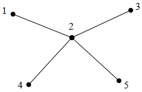

Taina Tietävä analysoi työkseen erilaisia tekstidatasta koostuvia tietokantoja. Hänen tehtävänään on etsiä datasta jollain tapaa mahdollisesti "mielenkiintoisia" piirteitä. Tällainen tutkimus kuuluu ns. tiedonlouhinnan piiriin.
Nyt Taina on saanut tutkittavakseen uuden N merkkiä pitkän tekstin. Analysoinnin yksi osatehtävä on tutkia tekstissä esiintyvää toistoa: kuinka pitkä sellainen yhtenäinen jakso tekstistä löytyy, että mikään vähintään K merkin pituinen jakso ei esiinny kyseisen jakson sisällä enempää kuin kerran. Tässä K on tehtävän yhteydessä erikseen ilmoitettu vakioarvo.
Esimerkiksi jos K = 2 ja teksti on "haha", on haettu vastaus 3 ja sitä vastaavia jaksoja ovat "hah" ja "aha". Pituuden 4 omaava jakso "haha" ei kelpaa, koska siihen sisältyy pituuden K = 2 omaava jakso "ha" useammin kuin kerran.
Vastaavasti jos K = 3 ja teksti on "eehehee", on haettu vastaus 5 ja sitä vastaavia jaksoja ovat "eeheh" ja "hehee". Esimerkiksi jakso "ehehee" ei ole laillinen, koska pituuden K = 3 omaava jakso "ehe" esiintyy siinä kaksi kertaa: ehehee ja ehehee (eli huomaa, että myös keskenään osittain päällekkäiset esiintymät lasketaan erillisiksi esiintymiksi).
Tehtäväsi on auttaa Tainaa toteuttamalla ohjelma, joka saa syötteenään arvon K sekä N merkkiä pitkän tekstin ja ilmoittaa pisimmän sellaisen tekstinjakson pituuden, jossa mikään K merkin pituinen jakso ei esiinny useammin kuin kerran.
Syötetiedoston toistot.in ensimmäisellä rivillä on kaksi toisistaan välilyönnein eroteltua positiivista kokonaislukua: luvut ovat järjestyksessä K ja N.
Tiedoston toisella rivillä on tekstin kuvaavat N merkkiä (sekä lisäksi lopussa rivinvaihto). Käytössä on englantilaisen aakkoston pienet kirjaimet eli kukin merkki kuuluu joukkoon {a, b, c, d, e, f, g, h, i, j, k, l, m, n, o, p, q, r, s, t u, v, w, x, y, z}.
Edellä mainittujen seikkojen lisäksi syötteen luvuille pätevät seuraavat rajat:
Tulostiedostoon toistot.out tulee kirjoittaa yksi rivinvaihtoon päättyvä rivi, joka sisältää yhden kokonaisluvun: pisimmän sellaisen tekstinjakson pituus, jossa mikään K merkin pituinen jakso ei esiinny useammin kuin kerran.
Ohjelmasi toteutuksen tulee olla yhdessä lähdekooditiedostossa. Tiedoston nimen tulee olla ohjelmointikielestä riippuen toistot.c, toistot.cpp tai toistot.pas. Ohjelmaasi testataan 20 kertaa erilaisilla syötteillä. Ohjelmasi saa kutakin testiä varten 1 sekunnin aikaa ja 64 megatavua keskusmuistia. Kunkin testin kohdalla täysin oikea tuloste antaa 5 pistettä. Aika- tai muistirajan ylittäminen tuottaa tulosteen oikeellisuudesta riippumatta 0 pistettä. Tehtävän maksimi on siis 100 pistettä.
3 7 eehehee
5
Kiertopelissä 4 x 4 -ruudukko sisältää luvut 1–16 jossakin järjestyksessä. Lukujen järjestystä voidaan muuttaa kiertojen avulla. Yksi kierto siirtää ruudukon jonkin vaakarivin lukuja askeleen vasemmalle tai oikealle tai ruudukon jonkin pystyrivin lukuja askeleen ylöspäin tai alaspäin. Ruudukon ulkopuolelle siirtyvä luku saa uuden paikan rivin toisesta päästä. Tavoitteena on järjestää luvut seuraavaan järjestykseen kiertojen avulla:
| 1 | 2 | 3 | 4 |
| 5 | 6 | 7 | 8 |
| 9 | 10 | 11 | 12 |
| 13 | 14 | 15 | 16 |
Tarkastellaan esimerkiksi seuraavaa aloitustilannetta:
| 6 | 7 | 3 | 4 |
| 9 | 10 | 8 | 5 |
| 16 | 14 | 11 | 12 |
| 1 | 13 | 2 | 15 |
Nyt lyhin luvut järjestävä kiertosarja sisältää neljä kiertoa:
| 6 | 7 | 3 | 4 |
| 9 | 10 | 8 | 5 |
| 16 | 14 | 11 | 12 |
| 1 | 13 | 2 | 15 |
| 1 | 7 | 3 | 4 |
| 6 | 10 | 8 | 5 |
| 9 | 14 | 11 | 12 |
| 16 | 13 | 2 | 15 |
| 1 | 7 | 3 | 4 |
| 6 | 10 | 8 | 5 |
| 9 | 14 | 11 | 12 |
| 13 | 2 | 15 | 16 |
| 1 | 2 | 3 | 4 |
| 6 | 7 | 8 | 5 |
| 9 | 10 | 11 | 12 |
| 13 | 14 | 15 | 16 |
| 1 | 2 | 3 | 4 |
| 5 | 6 | 7 | 8 |
| 9 | 10 | 11 | 12 |
| 13 | 14 | 15 | 16 |
Äskeisen aloitustilanteen tekstimuotoinen esitys on seuraava:
6 7 3 4 9 10 8 5 16 14 11 12 1 13 2 15
Vastaavan kiertosarjan tekstimuotoinen esitys on seuraava:
4 P 1 A V 4 V P 2 A V 2 O
Kiertosarjan esityksessä ensimmäisellä rivillä lukee kiertojen yhteismäärä. Tämän jälkeen jokaisella rivillä on ensin kirjain V tai P (vaaka- tai pystysuunta), sitten luku 1–4 (rivin numero) ja lopuksi kirjain V, O, Y tai A (vasemmalle, oikealle, ylöspäin tai alaspäin).
Seuraavassa paketissa on kymmenen kiertopelin aloitustilannetta:
Tehtävänäsi on muodostaa jokaiselle aloitustilanteelle kiertosarja, joka järjestää ruudukossa olevat luvut. Mikä tahansa kiertosarja kelpaa, mutta kiertosarjan pituus määrittää, kuinka paljon saat pisteitä. Pistemäärä lasketaan kaavalla L / O · 10, jossa L on lyhimmän kiertosarjan pituus ja O on oman kiertosarjasi pituus. Pistemäärä pyöristetään alaspäin kokonaisluvuksi. Esimerkiksi jos lyhin aloitustilannetta vastaava kiertosarja sisältää 15 kiertoa ja oma kiertosarjasi sisältää 22 kiertoa, pistemäärä on 15 / 22 · 10 = 6,8181... → 6. Jos kiertosarjan esitys on virheellinen tai se ei tuota haluttua järjestystä, pistemäärä on 0. Tehtävän maksimipistemäärä on 100 pistettä.
Aloitustilanteet ovat paketissa tiedostoissa kiertopeli.in.x, jossa x on luku 1–10. Palauta tehtävän ratkaisusi paketissa, joka sisältää vastaavat kiertosarjat tiedostoissa kiertopeli.out.x. Sinun ei tarvitse palauttaa laatimasi ohjelman lähdekoodia – eikä sinun ole pakko edes laatia ohjelmaa!
Erään kehittyvän valtion hallitus päätti viimein perustaa maahan pelastusasemaverkoston. Tämän kehitysprojektin käytettävissä olevalla rahoituksella voidaan rakentaa kaikkiaan P pelastusasemaa. Tavoitteena on sijoitella pelastusasemat maan tieverkoston varrelle siten, että mistään tieverkoston varrella olevasta pisteestä ei olisi liian pitkä matka lähimmälle pelastusasemalle. Nyt halutaankin etsiä vastaus siihen, että mikä on kaikkein pisin matka jostain tieverkoston pisteestä lähimpään pelastusasemaan, kun P pelastusasemaa sijoitellaan mahdollisimman hyvin? Tässä "mahdollisimman hyvä sijoittelu" tarkoittaa sellaista sijoittelua, jossa edellä mainittu pisin matka on mahdollisimman pieni.
Kyseisen valtion tieverkostoon kuuluu N kaupunkia, jotka on numeroitu luvuin 1…N. Tieverkosto on sellainen, että kunkin kahden pisteen välillä on täsmälleen yksi mahdollinen kulkureitti. Näin ollen kaupunkien välillä kulkee yhteensä N-1 tietä. Kunkin tien pituus on tasakilometrimäärä (voidaan siis ilmaista kokonaislukuna). Lisäksi kunkin tien varrella on kilometripylväät tasaisesti kilometrin välein.
Tehtäväsi on auttaa pelastusasemien kehitysprojektia toteuttamalla ohjelma, joka saa syötteenään pelastusasemien lukumäärän P sekä tieverkoston kuvauksen ja laskee, mikä on kaikkein pienin mahdollinen pisin etäisyys jostain tieverkoston pisteestä lähimmälle pelastusasemalle, kun P pelastusasemaa voidaan sijoittaa vapaasti kaupunkeihin sekä teiden varsilla olevien kilometripylväiden kohdille. Vastaus tulee antaa ylöspäin pyöristettynä kokonaislukuna. Huom! Pelastusasemat tulee sijoittaa kilometripylväiden kohdille, mutta ilmaisu "jokin tieverkoston piste" käsittää kaikki teiden pisteet eli myös ne, joiden etäisyys tien jommastakummasta päästä ei ole kokonaisluku.
Syötetiedoston asemat.in ensimmäisellä rivillä on kaksi toisistaan välilyönnein eroteltua positiivista kokonaislukua: luvut ovat järjestyksessä N ja P.
Tätä seuraa N – 1 riviä, joista kullakin on yhden tien kuvaavat kolme toisistaan välilyönnein eroteltua positiivista kokonaislukua. Luvuista kaksi ensimmäistä ilmaisevat kyseisen tien päätekaupunkien numerot. Kumpikin luku on aina välillä 1…N. Kolmas luku ilmaisee kyseisen tien pituuden kilometreinä. Jokaisen rivin lopussa on rivinvaihto.
Edellä mainittujen seikkojen lisäksi syötteen luvuille pätevät seuraavat rajat:
Tulostiedostoon asemat.out tulee kirjoittaa yksi rivinvaihtoon päättyvä rivi, joka sisältää yhden kokonaisluvun: pienimmän mahdollisen pisimmän etäisyyden jonkin tieverkoston pisteen ja sitä lähimmän pelastusaseman välillä.
Ohjelmasi toteutuksen tulee olla yhdessä lähdekooditiedostossa. Tiedoston nimen tulee olla ohjelmointikielestä riippuen asemat.c, asemat.cpp tai asemat.pas. Ohjelmaasi testataan 20 kertaa erilaisilla syötteillä. Ohjelmasi saa kutakin testiä varten 1 sekunnin aikaa ja 64 megatavua keskusmuistia. Kunkin testin kohdalla täysin oikea tuloste antaa 5 pistettä. Aika- tai muistirajan ylittäminen tuottaa tulosteen oikeellisuudesta riippumatta 0 pistettä. Tehtävän maksimi on siis 100 pistettä.
5 2 1 2 10 2 3 10 2 4 10 2 5 10
Esimerkkisyötettä havainnollistava kuva. Kunkin tien pituus on 10 kilometriä. Esimerkin tilanteessa voidaan melko helposti havaita, että jos kumpaakaan pelastusasemaa ei sijoiteta kaupunkiin 2 vaan ne sijaitsevat yhdessä tai kahdessa eri "haarassa", sijaitsee jokin tieverkon piste yli 10 kilometrin päässä lähimmästä pelastusasemasta. Sen sijaan jos sijoitamme jommankumman (tai molemmat) pelastusaseman kaupunkiin 2, on pisin etäisyys pelastusasemalle 10 km.
10